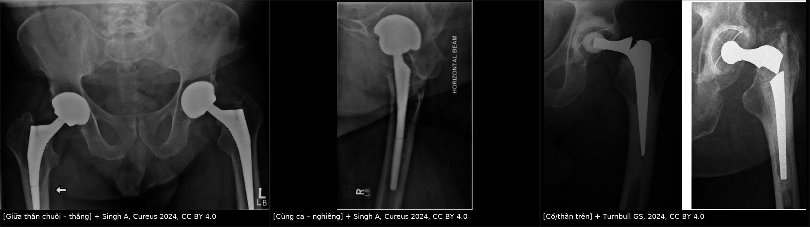
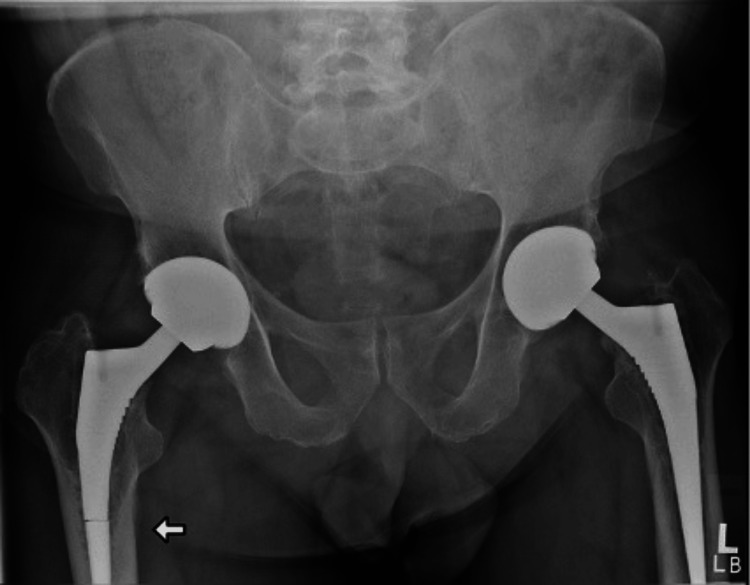
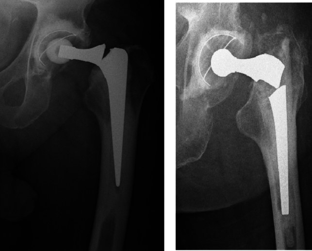
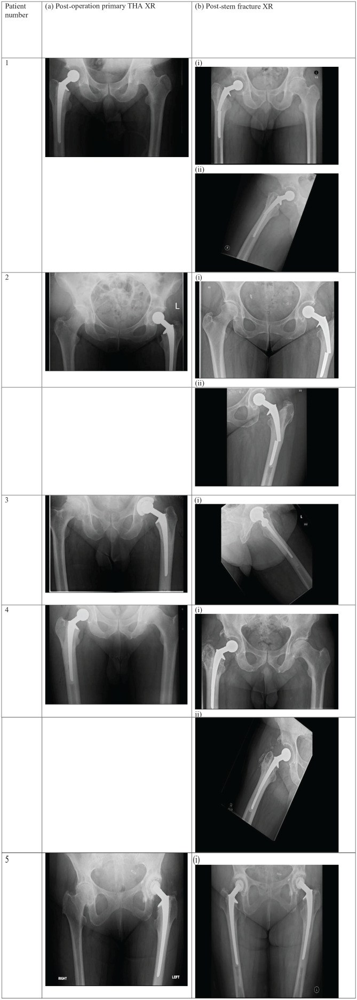

6185 — Vỡ chuôi khớp háng nhân tạo / Femoral stem fracture (implant fatigue failure)
Tags: pattern:gay-implant pattern:gay-ngang vung:khop-hang vung:xuong protocol:xquang-2-tu-the protocol:CT-giam-artifact score:UCS-FS
Mức chắc chắn (certainty): tổng hợp y văn (literature synthesis) — dựa trên phân tích gộp 15 nghiên cứu, 402 ca vỡ chuôi/49.723 THA (Arch Orthop Trauma Surg 2024, PMC11093816), loạt 5 ca Lubinus SP II (SAGE Open Med Case Rep 2025, PMC12394862), ca Corail tháo bằng trephine (Cureus 2024, PMC10896462) và bản sửa đổi UCS 2018 thêm nhóm FS (J Orthop Sci 2018, PMID 30104103). Không có ca do nhóm tự chụp.
Câu hỏi thực hành: nam 67 tuổi, BMI 35, đặt THA không xi măng hai bên cách đây 12 năm, đau mặt trước đùi phải tăng dần vài tuần, không chấn thương. X-quang khung chậu: một vạch sáng ngang 1–2 mm xuyên qua chuôi phải ở 1/2 thân, đoạn chuôi trên nghiêng nhẹ vào varus. Đây là gãy xương quanh chuôi hay vỡ chuôi, và cần làm gì? Bài chốt ba quyết định: (1) vạch sáng xuyên qua kim loại = vỡ chuôi (implant fracture), không phải gãy xương quanh chuôi — Vancouver/UCS B1–B3 không dùng được, đây là nhóm FS của UCS cải tiến 2018; (2) mọi vỡ chuôi đều phải lấy toàn bộ chuôi (không nẹp giữ phần chuôi, không "theo dõi") — phần chuôi xa thường cố định chắc trong xương nên cần trephine/ETO; (3) đọc 2 tư thế thẳng + nghiêng, vì vạch gãy < 1 mm có thể chỉ thấy trên phim nghiêng.
1. Tổng quan bệnh học – cơ chế hình ảnh
- Bản chất: vỡ chuôi là thất bại mỏi (fatigue failure) của kim loại, không phải chấn thương. Chuôi bị uốn lặp lại hàng triệu chu kỳ đi bộ; khi mất chỗ tựa xương đoạn gần (stress shielding, tiêu xương quanh chuôi, lỏng chuôi, hoặc đặt chuôi nhỏ trong ống tủy rộng) mà đoạn xa vẫn cố định chắc, toàn bộ mô-men uốn dồn vào tiết diện giữa thân chuôi → nứt khởi phát (crack initiation) ở nơi có điểm tập trung ứng suất (stress riser): khắc laser/nhãn chìm, chỗ chuyển tiếp tiết diện, hoặc khớp nối chuôi–cổ (modular junction) nơi có ăn mòn cọ xát (fretting corrosion).
- TẠI SAO vạch gãy nhìn thấy được: kim loại cản quang hoàn toàn, nên không có "tín hiệu" để so sánh; cái ta thấy là khe hở vài phần mười mm + di lệch/ngoặt góc của đoạn gãy trên. Vì vậy độ nhạy phụ thuộc góc tia: khe gãy song song chùm tia thì gần như biến mất trên phim thẳng, chỉ lộ ra trên phim nghiêng trùng mặt phẳng gãy — loạt Lubinus chụp thêm phim nghiêng "đồng mặt phẳng với chuôi gãy" cho từng ca.
- TẠI SAO hay ở 1/2 thân chuôi: mô-men uốn lớn nhất ở đoạn giữa (càng xa điểm tựa càng lớn) trong khi tiết diện chuôi nhỏ nhất cũng ở đó. Trong loạt Lubinus, 4/5 ca (80%) gãy giữa thân, 1/5 gãy đoạn xa ở bệnh nhân có varus −6° và restrictor xi măng 15 mm.
- Số liệu nền: tần suất vỡ chuôi 0,1–3,4% ở chuôi hiện đại (báo cáo lịch sử > 10%). Phân tích gộp: 402 ca vỡ / 49.723 THA, trung vị 68 tháng (IQR 42,5–118) từ mổ đến vỡ, cửa sổ nguy cơ 15 năm; loạt Lubinus: 5/4.240 = 0,1% ở theo dõi trung bình 7,5 năm, thời gian tới vỡ trung bình 6,4 năm, cân nặng trung bình 109 kg (88–128), BMI 36,5.
- Yếu tố nguy cơ định lượng (OR, KTC 95%): varus chuôi 5,77 (3,83–8,70) > cân nặng > 80 kg 3,55 (2,88–4,37) ≈ mổ lại/chỉnh sửa 3,33 (2,70–4,10) ≈ nam 3,27 (2,59–4,13) > chuôi module 1,95 (1,56–2,44) > tuổi < 63 1,22 (1,01–1,49). Đây là bộ số dùng để phân tầng theo dõi, không phải để tiên đoán cá nhân.
- Hệ quả: vỡ chuôi gần như luôn phải mổ lại, và lấy chuôi gãy khó hơn tháo chuôi nguyên vẹn: đoạn xa thường liền xương chắc nên phải khoan rỗng bằng trephine hoặc mở xương mấu chuyển (ETO). Ca Corail: đoạn gần lỏng, lấy ra dễ; đoạn xa lấy bằng trephine lớn hơn đường kính đoạn gãy 0,5 mm, có bơm nước muối ngắt quãng để tránh hoại tử nhiệt.
2. Mẫu hình + chẩn đoán phân biệt theo vị trí (gamut)
- Mẫu hình chung: vạch sáng ngang, bờ rõ, xuyên hết bề dày kim loại ± ngoặt góc đoạn chuôi trên ± đau đùi kiểu "đau dai dẳng tăng dần" trước khi phát hiện (ca Corail: đau acute-on-chronic).
- Gamut theo vị trí gãy (quyết định cách tháo và loại chuôi thay):
- Cổ chuôi/chỗ nối cổ–thân (neck–stem junction, trunnion): vạch gãy ngay dưới cổ; thường liên quan module/ăn mòn, đoạn gãy trên rời hẳn; dễ nhầm với tháo khớp đầu–cổ (head–neck dissociation).
- 1/3 trên thân: hiếm hơn, hay kèm varus và ống tủy hẹp.
- 1/2 thân (thường nhất, ~80% trong loạt Lubinus): vạch ngang giữa chuôi, đoạn trên nghiêng vào varus.
- 1/3 dưới/đoạn xa: hay gặp ở chuôi dài, chuôi mổ lại, ống tủy rộng, restrictor nhỏ.
- Vỡ chuôi + gãy xương quanh chuôi (thể phối hợp): loạt Malhotra 2021 gồm 11 ca dạng này (tuổi trung bình 56,8), không xếp được vào UCS gốc — chính là lý do sinh ra nhóm FS.
- Gamut theo cơ chế (để không chỉ nghĩ "chấn thương"): mỏi kim loại đơn thuần (đa số) · mỏi + ăn mòn/fretting tại khớp nối · khiếm khuyết chế tạo/khắc laser · mất xương đoạn gần do stress shielding · varus làm lệch trục tải · chuôi quá nhỏ trong ống tủy rộng.
3. Bảng so sánh phân biệt (ma trận đối chiếu)
| Thực thể (entity) | Hình ảnh điển hình | Chốt vào (rule-in) | Chốt loại (rule-out) | Gợi ý xác nhận |
|---|---|---|---|---|
| Vỡ chuôi do mỏi — giữa thân | Vạch sáng ngang xuyên kim loại ở 1/2 chuôi, đoạn trên nghiêng varus, không có vạch sáng quanh chuôi | Vạch xuyên hết bề dày kim loại + bậc thềm ở bờ chuôi | Vạch chỉ nằm trên bề mặt, không qua bờ đối diện → khắc laser/giả ảnh | X-quang thẳng + nghiêng; so phim cũ; đo góc varus |
| Vỡ cổ/chỗ nối cổ–thân | Vạch ngay dưới cổ; đầu chỏm có thể lệch trục so với thân; khoảng trống giữa cổ và thân | Mất liên tục kim loại tại junction | Chỏm rời khỏi cổ nhưng cổ còn nguyên → tháo khớp, không phải vỡ chuôi | Phim nghiêng, phóng đại vùng cổ; CT ít giá trị vì artifact |
| Vỡ chuôi + gãy xương quanh chuôi (FS1–FS3) | Đường gãy xương đùi + đường gãy xuyên chuôi; đoạn chuôi trên vững (FS1) hay lỏng (FS2/FS3) | Hai đường gãy cùng tồn tại trên 2 bình diện | Chỉ có đường gãy xương → xếp Vancouver/UCS B1–B3, không phải FS | X-quang 2 tư thế; CT giảm artifact khi cần đánh giá ổ xương |
| Gãy xương quanh chuôi (Vancouver B1/B2/B3) | Đường gãy trong xương, chuôi còn nguyên; B2/B3 có dấu lỏng chuôi | Chuôi liên tục + đường gãy xương | Có vạch xuyên kim loại → chuyển nhóm FS | X-quang, CT; so phim cũ tìm lún chuôi |
| Nới lỏng vô khuẩn (aseptic loosening) | Vạch sáng quanh chuôi ≥ 2 mm, vùng tối hình nêm, lún chuôi, bệ xương dưới đầu chuôi | Vạch sáng quanh chuôi tiến triển + lún | Không có vạch xuyên kim loại; đau kiểu khởi động | So phim theo thời gian; CT đánh giá tích hợp xương |
| Tháo khớp / đầu–cổ rời (dissociation) | Chỏm lệch hẳn khỏi cổ, khoảng trống rộng, chuôi nguyên | Chỏm–cổ mất tiếp xúc, chuôi nguyên vẹn | Cổ gãy → vỡ chuôi nhóm cổ | Phim nghiêng; hỏi đau "bật" đột ngột |
| Giả tổn thương (etch mark, lưới, mép chồng hình) | Vạch mảnh, thẳng, không qua bờ đối diện, lặp lại ở nhiều phim, không đổi theo tư thế | Không có bậc thềm, không ngoặt góc | Xuất hiện đúng một vị trí và có bậc thềm → vỡ thật | Đổi tư thế/góc, chụp lại, xem phim cũ cùng góc |

Trái: vạch sáng ngang 1–2 mm xuyên chuôi phải ở 1/2 thân, đoạn trên nghiêng vào varus. Giữa: cùng ca trên phim nghiêng — khe gãy rõ hơn. Phải: hai ca vỡ ở cổ/chỗ nối cổ–thân, đoạn chuôi trên đã tách rời. Nguồn: Singh A (Cureus 2024, PMC10896462) và Turnbull GS (Arch Orthop Trauma Surg 2024, PMC11093816), CC BY 4.0. Ảnh ghép letterbox, không crop.Ba dấu hiệu đọc chuẩn trên phim
- Dấu bậc thềm (step-off): bờ ngoài của đoạn chuôi trên lệch ra/vào so với đoạn dưới — dấu chắc nhất khi khe gãy < 1 mm.
- Dấu ngoặt góc (angulation): đoạn trên nghiêng vào varus; ở loạt Lubinus, varus trung bình −2,2° nhưng ca gãy đoạn xa có −6° — góc càng lớn càng gợi ý trục tải lệch.
- Dấu "mất liên tục viền" (cortical discontinuity of the stem): viền cản quang của chuôi đứt tại một điểm, dù chỉ 1–2 mm — khác với vạch khắc laser vốn không làm đứt viền đối diện.
4. Protocol chụp + hệ phân độ chuẩn hóa
- X-quang là chuẩn chẩn đoán, không cần MRI: khung chậu thẳng + khớp háng thẳng + khớp háng nghiêng trùng mặt phẳng chuôi. Ghi rõ tầng gãy (cổ/1-3 trên/giữa/1-3 dưới), góc varus đo trên phim thẳng, và so phim cũ để phát hiện lún chuôi hoặc thay đổi góc.
- CT giảm artifact kim loại (MAR) khi cần: đánh giá tích hợp xương đoạn xa, khuyết xương, mức độ lỏng chuôi, và quy hoạch đường tháo (trephine vs ETO). Không dùng CT để "tìm khe gãy" khi phim đã rõ.
- Không dùng MRI làm chuẩn ở chuôi kim loại (artifact); PET/CT cũng bị artifact — nếu nghi nhiễm trùng, dựa vào CRP/ESR + chọc hút, không dựa vào hình ảnh.
- Hệ phân độ dùng đúng: UCS cải tiến 2018 (Huang và cs, J Orthop Sci) thêm nhóm FS cho vỡ chuôi, sau khi 46/402 ca (11,4%) không xếp được vào UCS gốc:
- FS0 — vỡ chuôi đơn thuần.
- FS1 — vỡ chuôi + gãy xương, đoạn chuôi gần còn vững.
- FS2 — đoạn chuôi gần lỏng, chất lượng xương quanh còn tốt.
- FS3 — đoạn chuôi gần lỏng, ổ xương kém.
- Trong 46 ca đó: 35 B2PALT, 2 B2PAGT, 3 FS0, 1 FS1, 2 FS2, 3 FS3; bản sửa đổi cũng bỏ type F vì không áp dụng cho xương đùi.
- Nguyên tắc điều trị (dùng cho mọi FS): chuôi đã gãy thì không thể giữ — phải lấy toàn bộ chuôi rồi thay chuôi dài cố định xa (hoặc chuôi module có rãnh); FS1 khó tháo vì đoạn gần vẫn chắc (cần trephine/ETO), FS2/FS3 thêm phần xử lý khuyết xương. Đây là lý do phân độ theo độ vững đoạn gần + chất lượng ổ xương, không theo vị trí gãy.
flowchart TD
A[Vach sang xuyen kim loai tren X-quang] --> B{Co duong gay xuong dui kem theo?}
B -->|Khong| FS0[FS0 — vo chuoi don thuan]
B -->|Co| C{Doan chuoi gan con vung?}
C -->|Vung| FS1[FS1 — doan gan vung]
C -->|Long| D{Chat luong o xuong dui?}
D -->|Tot| FS2[FS2 — long, xuong tot]
D -->|Kem| FS3[FS3 — long, o xuong kem]
FS0 --> E[Thao toan bo chuoi bang trephine hoac ETO]
FS1 --> E
FS2 --> E
FS3 --> F[Thao chuoi + xu ly khuyet xuong + chuoi dai co dinh xa]
E --> G[Chuoi dai co dinh xa va theo doi 15 nam]
F --> G
5. Biến thể bình thường và cạm bẫy
- Vạch khắc laser/nhãn chìm trên chuôi: đường mảnh, đều, không xuyên bờ đối diện, xuất hiện ở cùng một vị trí trên mọi phim. Đừng gọi là gãy — tìm bậc thềm và ngoặt góc.
- Chỉ đọc phim thẳng: khe gãy < 1 mm có thể hoàn toàn khuất. Ca Corail được chẩn đoán nhờ thêm phim nghiêng; loạt Lubinus chụp nghiêng đồng mặt phẳng cho từng ca.
- Satisfaction of search: thấy gãy xương quanh chuôi rồi dừng — loạt 11 ca của Malhotra cho thấy gãy xương + vỡ chuôi cùng tồn tại, và UCS gốc xếp sai những ca này. Luôn nhìn dọc toàn bộ chiều dài chuôi sau khi thấy đường gãy xương.
- Gọi "lỏng chuôi" cho ca vỡ chuôi: khi đã có vạch xuyên kim loại thì không mô tả là nới lỏng; mô tả vị trí + độ vững đoạn gần + khuyết xương theo FS.
- Bỏ sót "vỡ chuôi thể ẩn" ở bệnh nhân đau đùi không rõ nguyên nhân: nếu đau tăng dần khi đi bộ và có yếu tố nguy cơ (nam, > 80 kg, varus, chuôi nhỏ, mổ lại) → chụp lại 2 tư thế, so phim cũ, đừng chỉ dựa một phim thẳng.
- Chuôi bị uốn cong (plastic deformation) không có vạch gãy: nhìn trục chuôi so với trục ống tủy và so phim cũ; đây vẫn là thất bại implant, xử trí như vỡ.
6. Tự lượng giá — Blind Quiz
Ca 1 — Nam 67 tuổi, BMI 35, THA không xi măng hai bên 12 năm, đau mặt trước đùi phải tăng dần, không chấn thương. Nhìn phim thẳng, mô tả trước.

- Hỏi: có đường gãy nào xuyên qua kim loại không? Nó ở tầng nào của chuôi? Có dấu ngoặt góc? Chẩn đoán phân biệt 3 khả năng và bước tiếp theo?
Bấm để hiện đáp án (findings + chẩn đoán)
- Dấu hiệu: vạch sáng ngang, 1–2 mm, xuyên hết bề dày chuôi phải ở 1/2 thân, kèm bậc thềm ở bờ chuôi và nghiêng nhẹ varus của đoạn trên (mũi tên). Chuôi trái nguyên.
- Chẩn đoán: vỡ chuôi do mỏi (FS0) — chuôi Corail không xi măng. Không phải gãy xương quanh chuôi: đường gãy nằm trong kim loại, không trong xương.
- Vì sao: mất tựa xương đoạn gần + đoạn xa cố định chắc → toàn bộ mô-men uốn dồn vào giữa thân; BMI 35 và 12 năm là đúng cửa sổ nguy cơ (trung vị 68 tháng, cửa sổ 15 năm).
- Bước tiếp theo: phim nghiêng khẳng định, rồi mổ tháo toàn bộ chuôi: đoạn gần lỏng lấy dễ, đoạn xa lấy bằng trephine lớn hơn 0,5 mm so với đường kính đo được, bơm nước muối ngắt quãng tránh hoại tử nhiệt.
- Nguồn: Singh A và cs, Cureus 2024 (PMC10896462), CC BY 4.0.
Ca 2 — Hai bệnh nhân đau háng, mỗi người một phim thẳng khác kiểu gãy. So sánh trước khi mở đáp án.

- Hỏi: đường gãy ở cổ chuôi khác gì vỡ giữa thân về cơ chế và về cách tháo? Có cần phân độ Vancouver không?
Bấm để hiện đáp án (findings + chẩn đoán)
- Dấu hiệu: vạch gãy ngay dưới cổ chuôi, đoạn chuôi trên tách rời và lệch trục so với thân; viền kim loại đứt hoàn toàn.
- Chẩn đoán: vỡ cổ/chỗ nối cổ–thân — cơ chế thường là ăn mòn cọ xát tại khớp nối (fretting/trunnionosis) hoặc điểm tập trung ứng suất ở chuyển tiếp tiết diện, chứ không phải uốn giữa thân.
- Khác biệt xử trí: đoạn gãy trên rời tự do nên dễ lấy; khó là phần chuôi còn lại trong ống tủy (thường vẫn chắc) — vẫn phải lấy toàn bộ rồi thay chuôi dài; không dùng Vancouver (Vancouver chỉ mô tả gãy xương quanh chuôi còn nguyên).
- Nguồn: Turnbull GS và cs, Arch Orthop Trauma Surg 2024 (PMC11093816), CC BY 4.0.
Ca 3 — Loạt 5 bệnh nhân cùng một loại chuôi (Lubinus SP II): cột trái là phim sau mổ nguyên chuôi, cột phải là phim khi nhập viện vì vỡ.

- Hỏi: ca nào gãy giữa thân, ca nào gãy đoạn xa? Yếu tố nào trong bài giải thích vị trí gãy? Vì sao phải chụp nghiêng ở từng ca?
Bấm để hiện đáp án (findings + chẩn đoán)
- Dấu hiệu: 4/5 ca (80%) gãy giữa thân; 1/5 gãy đoạn xa — ca này có varus −6° và restrictor 15 mm (đường kính ống tủy lớn hơn, chuôi tương đối nhỏ). Cột phải có cả phim nghiêng đồng mặt phẳng vì khe gãy mảnh.
- Vì sao: mô-men uốn lớn nhất ở giữa thân, tiết diện nhỏ nhất cũng ở đó; varus và cân nặng lớn (trung bình 109 kg, BMI 36,5 ở loạt này; OR 3,55 cho > 80 kg) làm tăng tải.
- Bài học: cùng một loại chuôi vẫn gãy nhiều tầng → luôn đo tầng gãy và góc varus, ghi vào báo cáo để so lần sau.
- Nguồn: Panzures A và cs, SAGE Open Med Case Rep 2025 (PMC12394862), CC BY 4.0.
Bài liên quan chéo
- 6155 – Gãy xương quanh chuôi đùi sau THA / PPFF & Vancouver–UCS (phân biệt gãy xương với vỡ chuôi)
- 6140 – Lỏng vỏ khớp quanh khớp háng nhân tạo (vạch sáng quanh chuôi, không xuyên kim loại)
- 6110 – Nhiễm trùng quanh khớp nhân tạo sau thay (khi cần phân biệt với đau do nhiễm)
- 6151 – Trật khớp háng nhân tạo tái diễn (tháo khớp, lệch trục chỏm–cổ)
- 6141 – Vôi hóa quanh khớp háng nhân tạo
- 310 – Giải phẫu xương khớp và biến thể
Không dùng để chẩn đoán độc lập khi chưa có người hướng dẫn.